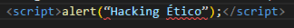

Fase 3
Obtener Acceso
Es la fase de penetración al sistema vulnerable, en esta fase el hacker explota las vulnerabilidades que encontró en la Fase de Escaneo.
Obtener Acceso
La tercera fase, la más divertida, porque es donde se rompen los controles y medidas de seguridad para obtener acceso no autorizado. En esta fase, se ejecuta el ataque que puede ser tan simple como acceder a una red inalámbrica con contraseña débil, o tan complejos como escribir y enviar un desbordamiento de búfer o una inyección SQL contra una aplicación web.
El acceso es la fase más importante en términos de un potencial daño. Sin embargo, un atacante no necesariamente necesita ganar acceso a los sistemas para causar daño, los ataques de denegación de servicios pueden sobrecargar recursos o detener servicios que corren en un sistema. Se puede realizar deteniendo servicios, usando bombas lógicas o reconfigurando servicios, ejemplos de estos son los stack based buffer over flow, denial-of-services, session hijacking, entre otros. También en esta fase se pueden incluir técnicas de spoofing, packet flooding.
Ataque XSS(Cross-Site Scripting)
XSS ocurre cuando un atacante es capaz de inyectar un script, normalmente Javascript, en el output de una aplicación web de forma que se ejecuta en el navegador del cliente. Los ataques se producen principalmente por validar incorrectamente datos de usuario, y se suelen inyectar mediante un formulario web o mediante un enlace alterado.
Algunos de los objetivos que se quieren conseguir con ataques XSS son: robar cookies y sesiones de usuarios, modificar el sitio web, realizar HTTP requests con la sesión del usuario, redireccionar a usuarios a sitios dañinos, atacar al navegador o instalar malware, reescribir o manipular extensiones de navegador, etc.
Tipo de ataques XSS: Non-persistent XSS y Persistent XSS
Non-persistent XSS
Los ataques non-persistent XSS o reflected XSS no almacenan el código malicioso en el servidor sino que lo pasan y presentan directamente a la víctima. Es el método más popular de ataque XSS. El ataque se lanza desde una fuente externa, mediante email o un sitio de terceros.
Ejemplo: En formulario de ingreso en un input de texto:

Persistent XSS
El código malicioso ya ha superado la barrera del proceso de validación y está almacenado en un almacén de datos. Puede ser un comentario, un archivo log, un mensaje de notificación, o cualquier otro tipo de sección del sitio web que solicita algún input al usuario. Cuando esta información en particular se presenta en el sitio web, el código malicioso se ejecuta.
Ejemplo: 
Ataque SQL
La inyección de SQL es un tipo de ciberataque encubierto en el cual un hacker inserta código propio en un sitio web con el fin de quebrantar las medidas de seguridad y acceder a datos protegidos. Una vez dentro, puede controlar la base de datos del sitio web y secuestrar la información de los usuarios.
Los hackers recurren a los ataques de inyección de SQL con el fin de introducirse en la base de datos de un sitio web. A veces solo quieren eliminar datos para provocar el caos y, en otras ocasiones, lo que buscan es editar la base de datos, especialmente en el caso de sitios web financieros. En el momento en que el hacker ha logrado el control de la base de datos, ya es fácil interferir en los saldos de las cuentas de los clientes y mandarse dinero a su propia cuenta.
Ejemplo:
Inyección SQL en banda
La inyección SQL en banda es la forma más simple de inyección SQL. En este proceso, el atacante es capaz de utilizar el mismo canal para insertar el código SQL malicioso en la aplicación, así como para recoger los resultados.
haz click aqui para ver ejemplos
Inyección SQL Inferencial (Blind SQL Injection)
El atacante envía varias consultas a la base de datos para evaluar cómo la aplicación analiza estas respuestas. Una inyección SQL inferencial es a veces también conocida como inyección SQL ciega.
haz click aqui para ver ejemplos
Inyección SQL fuera de banda
Si un atacante no puede obtener los resultados de una inyección SQL a través del mismo canal. Las técnicas de inyección SQL fuera de banda pueden utilizarse como alternativa a las técnicas de inyección SQL inferencial.
En MySQL, las funciones LOAD_FILE() y INTO OUTFILE pueden ser usadas para solicitar a MySQL que transmita los datos a una fuente externa.
haz click aqui para ver ejemplos
Desbordamiento de buffer
Un desbordamiento del buffer es una situación en la que un programa en ejecución intenta escribir datos fuera del buffer de memoria que no está destinado a almacenar estos datos. Esto sucede a menudo debido a una mala programación y la falta de validación de entrada o deficiente en el lado de la aplicación. Cuando se produce un desbordamiento del buffer de memoria y los datos se escriben fuera del buffer, el programa en ejecución puede volverse inestable, bloquearse o devolver información corrupta. Las partes sobrescritas de la memoria pueden haber contenido otros datos importantes para la aplicación en ejecución que ahora se sobrescribe y ya no está disponible para el programa. Los desbordamientos del buffer pueden incluso ejecutar otros programas o comandos (maliciosos) y provocar la ejecución de código arbitrario.
Tipo de ataques Desbordamiento de buffer
Ataque de desbordamiento de pila: este es el tipo más común de ataque de desbordamiento de buffer e implica desbordar un buffer en la pila de llamadas.
Ataque de desbordamiento de montón: este tipo de ataque apunta a datos en el grupo de memoria abierta conocido como el montón.
Desbordamiento de enteros: en un desbordamiento de enteros, una operación aritmética da como resultado un entero (número entero) que es demasiado grande para el tipo de entero destinado a almacenarlo. Esto puede provocar un desbordamiento del buffer.
Desbordamiento Unicode: un desbordamiento Unicode crea un desbordamiento de buffer insertando caracteres Unicode en una entrada que espera caracteres ASCII. ASCII y Unicode son estándares de codificación que permiten que las computadoras representen texto. Por ejemplo, la letra ‘a’ está representada por el número 97 en ASCII. Mientras que los códigos ASCII solo cubren caracteres de idiomas occidentales, Unicode puede crear caracteres para casi todos los idiomas escritos en la tierra debido a que hay muchos más caracteres disponibles, muchos caracteres Unicode son más grandes que el carácter ASCII más grande.
haz click aqui para mas información
Video Capsula
Recomendaciones
Para prevenir ataques XSS NUNCA confíes de datos que vienen de usuarios o de cualquier otra fuente externa. Cualquier dato debe ser validado o escapado para su output.
Ejemplo: Validación de datos usando Expresiones Regulares
haz click aqui para ver mas ejemplos
haz click aqui para ver otras forma de prevención>
Para prevenir ataque SQL: se deben Usar declaraciones preparadas
haz click aqui para mas informaciónPara prevenir desbordamiento del buffer:
La solución mejor y más efectiva es evitar que ocurran condiciones de desbordamiento del buffer en el código. Por ejemplo, cuando se espera un máximo de 8 bytes como datos de entrada, la cantidad de datos que se puede escribir en el buffer se limitará a 8 bytes en cualquier momento.Además, los programadores deben usar las funciones de guardar, probar el código y corregir los errores en consecuencia. Los métodos proactivos para la prevención de desbordamiento del buffer como estos deben usarse siempre que sea posible para limitar las vulnerabilidades de desbordamiento del buffer.
haz click aqui para mas información